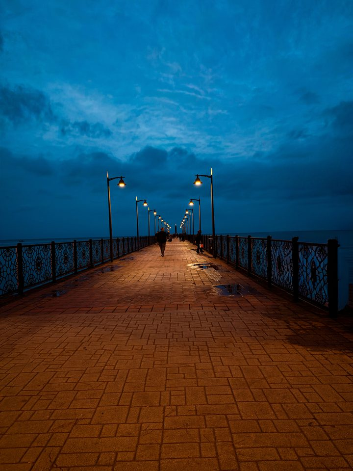

Karelerin Ardında
Her karenin bir öncesi, bir sonrası var. Burada fotoğrafların ardında kalanları yazıyorum.
-
04
Gölgenin İçinden
Adam karanlığın içinden yürüyor. İki sepet taşıyor ellerinde. Yükünün ağırlığını sepetlerden çok, öne eğilmiş bedeninden, yere doğru uzayan gölgesinden anlıyoruz.
Yazıyı oku
-
03
Şehrin Sessizliği
Arnavut taşların kapladığı ıssız bir sokak… Burada zaman akmıyor, birikiyor.
Yazıyı oku
-
02
Fotoğraf ve Hayat
Bir fotoğraf çektiğimizde aslında zamanı durdurmaya çalışırız. Oysa hayat akmaktan başka bir şey yapmaz.
Yazıyı oku
-
01
